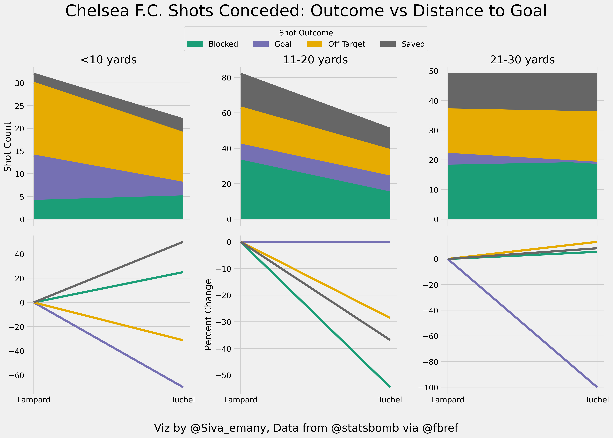
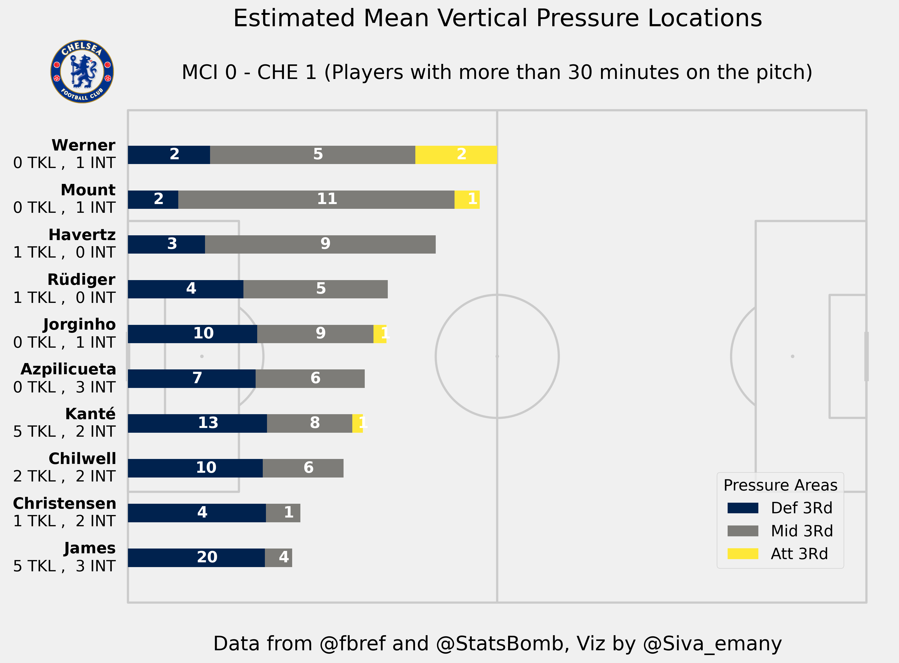
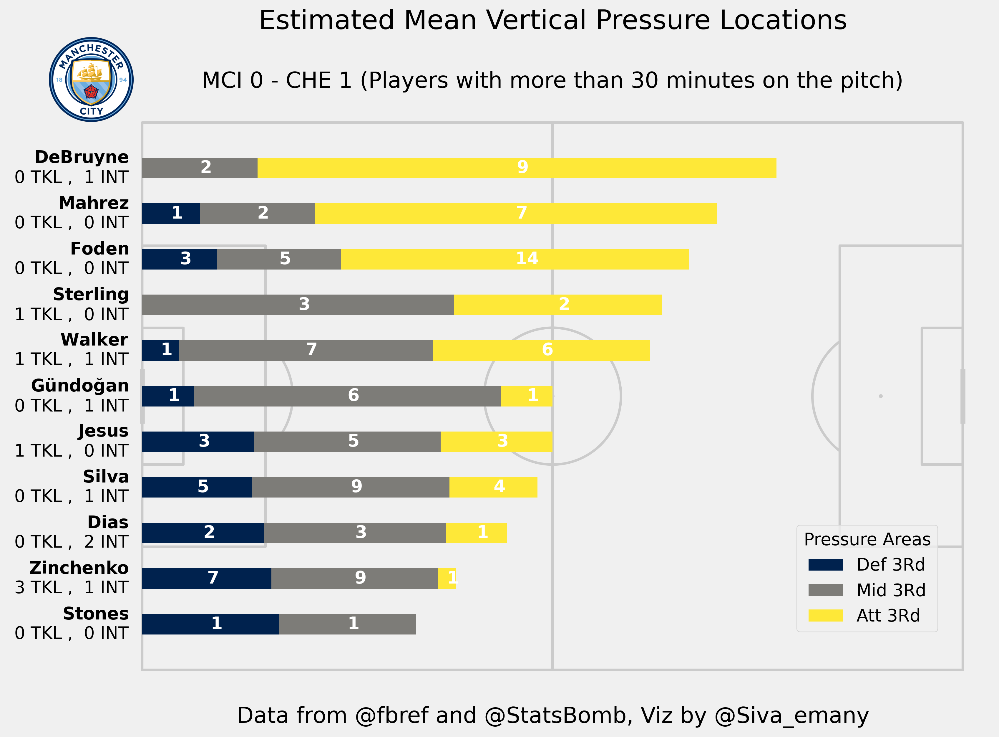
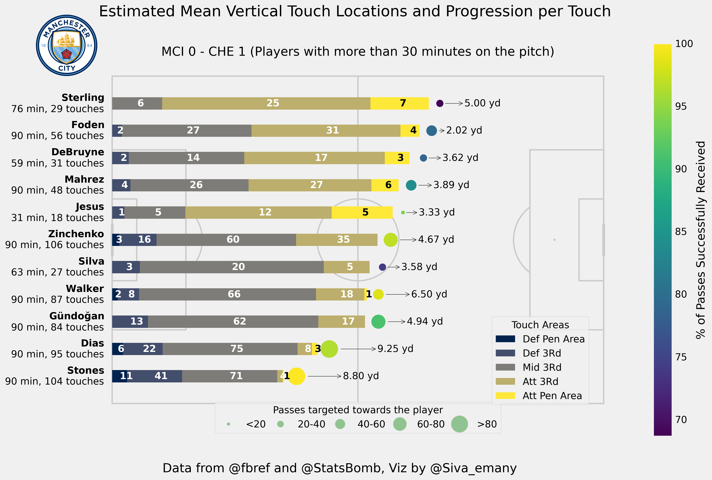
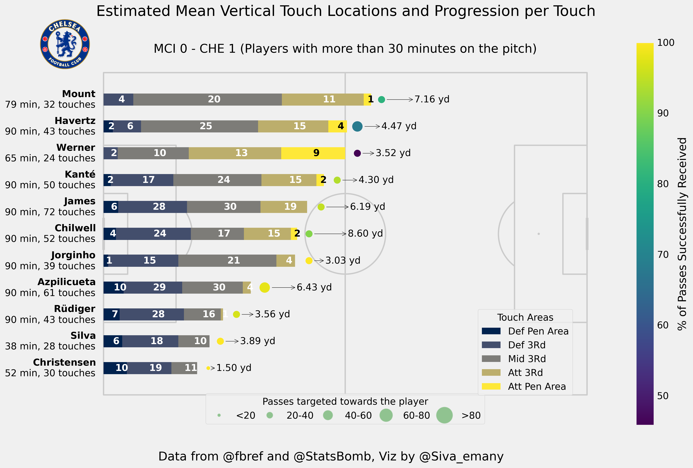

Chelsea F.C - Champions of Europe twice over
Chelsea won the Champions League for the second time in their history on 28 May, 2021. Nine years and a bit after the first time they won it in a dramatic fashion. Before we get to the numbers, I want to reflect on my memories of this incredible football club’s tempestuous relationship with this competition, which was for so long the Holy Grail, the altar at which many managerial jobs were sacrificed. It seems that this sacrifice is a necessary appeasement to the gods to clear the path to victory and destiny.
Walk down the memory lane
The last time Chelsea won the Champions League, I sat alone with my laptop in a dark room, heart thumping out of my chest for over 120 minutes. The entire ordeal was worth it because the players who were part of my earliest football memories and my sporting heroes, in their waning light pulled together and made a miracle happen. There was nothing else to it but a sheer desire to not give up and an overwhelming sense of destiny. It was an amazing experience I sadly had nobody around to share with and had to contain my excitement lest I wake my entire family up.
I didn’t know when Chelsea would be back at this stage, we came close a couple of years down the line from that, but I will never forget that night. I forever will remember Ivanovic straddling the pole, Lampard running towards the fans, Drogba and Cech collapsing in tears of joy after finally slaying the beast that evaded them for the better part of a decade. Champions League nights are always special, even if you are half a world away.
Glory in Porto
9 years on from that day, I once again watched the match alone at home, this time a predicament imposed on me because the world outside my home is plague ridden. An insignificant inconvenience while so many suffer and lose their lives and their loved ones. I am eternally grateful that this virus has not touched the people I love and will continue to hope that it won’t. That said, to share this moment with people who share the same passion for my club would have meant the world. I will settle however for these few words shared with the internet, wanting only to convey my joy and share it with people who feel the same.
It means everything that Mount and James, guys who I’ve followed closely from their U18 days have made their mark at the highest stage. It means everything that club legends Azpilicueta and N’Golo Kante can add the most elusive of trophies to their honors list. It means everything that a guy like Mendy can have a meteoric rise and have a complete amazing season in front of goal. These are just a few things that make this trophy special. If what happened in 2012 was the end of an era, then this is the beginning of a new one.
A word for Thomas Tuchel
There is a sense of detached calm I associate with Thomas Tuchel. There is also a sense of detachment with him as a coach. He is no doubt a passionate man who wants to win above all else. A very desirable trait in a manager. However, he acts with the knowledge and acceptance that one day he will be sacked, this frees him from playing the same politics and ego struggles that got many of his predecessors fired. Long may that continue.
His complete transformation of the flamboyant if flawed young team under Lampard to a defensive juggernaut is miraculous. A complete and utter sense of control has been at the root of all he has accomplished at Chelsea. A defense that is strong not because it can repel attackers and absorb pressure but because it simply doesn’t allow dangerous situations against itself.

To that, Tuchel added a tactical flair which allowed him to dominate all of his opponents on the way glory in the Champions League, won in a very convincing fashion against the media’s champions-elect Manchester City and Pep Guardiola. I never thought I’d see the day when Chelsea would need no miracles, no luck to win the Champions League. Every team needs a good serving of that to win it but Tuchel did without. A remarkable achievement less than 5 months into the job.
I look forward to what he will do next with excitement, knowing full well that he may be fired come next January. I guess that’s what being a grown up is.
Evolution after a revolution
Two years ago, if you had told me that Mason Mount and Reece James would play starring roles in a season where Chelsea win the Champions League, I would not have believed you. There simply was no precedent. But desperate times call for desperate measures. Chelsea were losing their talisman, a man who singlehandedly got them top 4 and a European trophy before bowing out, in Eden Hazard. They were facing a transfer ban, so they did something radical. They hired an inexperienced coach in Lampard to come in and change the squad profile and boy did he deliver on that. Chelsea have found out that the academy boys are good enough and then some. I hope that this lesson won’t be forgotten. By all means, keep spending money on the Havertzses and Werners of the world but also allow the precocious talents carefully nurtured at Cobham to lay down their claim to the first team. If nothing else, by enhancing their value to other teams, Chelsea can continue to spend money by selling their very talented academy players at a markup. This evolution is needed after the revolution that happened in the previous season.
Back to brass tacks
Chelsea surprised City with their game plan. A lot was made of Pep not playing his hatchet men in midfield. Perhaps that was because he expected Chelsea to press them high and hence wanted Gundogan’s security and invention on the ball. Or perhaps, he knew that Chelsea roasted both Fernandinho and Rodri in previous games with ease, so he YOLOed his lineup to play to his beliefs. Chelsea however, had other plans. They allowed the City CBs to advance with little to no pressure on them. Majority of the effort was spent cutting out all passing options into the middle of the pitch, then asking the wingbacks to be touch tight and dominate the opposition wide players. This is clearly evident in the below pressure map of Chelsea.

It’s interesting that James was Chelsea’s lowest positioned when it comes to applying defensive pressures, this tracks well with Sterling being City’s highest positioned player in possession. It would be an understatement to say that James dominated his area. With 5 tackles, 3 interceptions, 24 pressures and a pressure regain percentage of 45.8.
And then there was N’Golo Kante, the bane of KdB’s existence on the night. He put in 22 pressures with a whopping 54.5% pressure regain percentage. He had 7 tackles+interceptions, 3 clearances and 2 blocked passes. He allowed nobody to dribble past him.

On the ball Kante was calm and collected. He executed a team high 11 passes under pressure, dribbled past his opponents twice in three attempts and successfully received 30/32 passes targeted towards him. Given City’s high pressing and Chelsea’s tactic of absorbing pressure on the right, this was very impressive and a key part of our success. Give him the Ballon d’Or now.

City CBs were unimpeded when trying to progress the ball and were aggressively positioned as usual. Gundogan’s role as a playmaker suffered from being denied the passing options into the block due to excellent work from the team to cut off passing lanes, forcing them wide into Sterling or Mahrez. Both wingers were turned into complete non-entities by James and Chilwell. All this ended up meaning that City were toothless in attack.

Chelsea on the other hand were clever with their approach to take the game to City. They absorbed pressure on the right and then switched to Mount and Chilwell who found themselves overloading City on that flank. Once the ball got to them, their responsibility was to advance it at pace. The same move occurred multiple times and ultimately paid dividends for the goal. Mount completed 92% of his passes. 6/25 were progressive passes and he executed 2/3 dribbles. As a player tasked with primary creative responsibility as well as ball progression, he is maturing every day.
Nobody on the pitch had anything less than a perfect game but a special mention should go to Kai Havertz. He played his role to perfection. He ran at City well, completed 3/4 dribbles and won 4 fouls high up the pitch, especially late in the game. He also won 4/10 headers providing an aerial outlet on the right hand side of the pitch. A consummate center forward performance in the Champions League final. I believe there is more to come from him and that his best role is as part of a front 2. I hope that this finally kickstarts his Chelsea career.
In conclusion
Chelsea beat City and Pep Guardiola thrice in one month, thoroughly. Tuchel and the team deserve immense credit for this. They showed up when it mattered, like the best Chelsea teams of past and delivered on the biggest occasion. The world is at this Chelsea squad’s feet now and sky is the limit to what they can achieve. Nearly 18 years after the first magnificent Chelsea team under Roman, we have the makings of the second one.